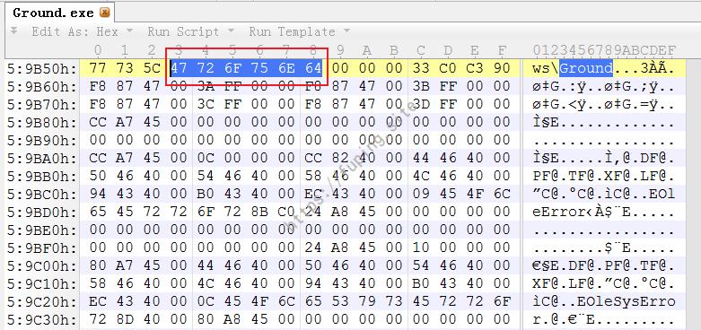
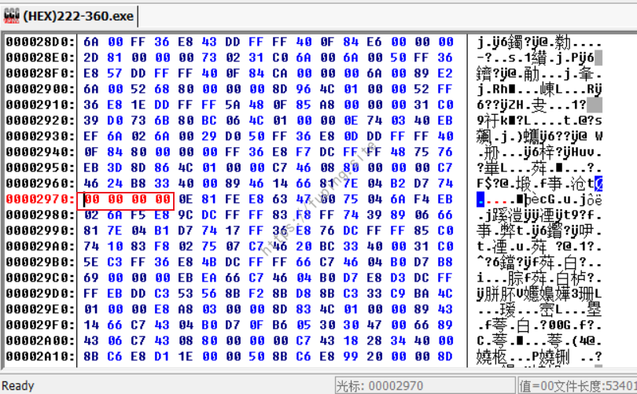
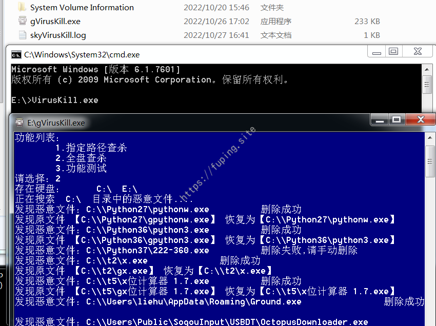

0x00 前言 最近有这样一个需求，需要对某病毒写一个专杀工具，针对这款病毒进行查杀。这个病毒样本是今年2月份发现的，该病毒相对来说比较友好，没有采用加密，也没有删除原文件，也没有网络传播行为。只是会感染可执行文件，会将原文件修改名字，生成一个与原文件同名的感染文件，运行后可继续感染其他文件。接下来首先从非专业的角度来简单看一下该病毒是如何运行的。
0x01 病毒分析 运行病毒文件，一旦找到可感染的可执行文件，病毒会将其复制为 g<原始文件名>.exe，并将其隐藏。然后用原程序的名称和图标复制自己；如果原文件的资源中不存在该图标，病毒将使用自己的图标，并留下一个0大小的文件g<原始文件名>.ico。生成的文件大小为522k左右。
如上图，python.exe感染后会生成gpython.exe（原始程序）并隐藏，此时python.exe（感染程序）相当于一个加载器，运行时会执行病毒程序同时运行gpython.exe。
如果文件夹中文件exe文件是g开头，则不感染。
当点击替换后的可执行文件后，病毒会启动恶意主程序ground.exe，感染其他可执行文件，并设置开机启动项。
启动项
通过非专业的角度对病毒文件的运行进行了简单的分析，病毒查杀的话就是全盘或指定路径扫描可执行文件，根据病毒文件的特征码来判断该文件是否是病毒文件，如果是则进行删除，然后将原文件进行恢复。大致流程如下图：
0x02 代码编写 根据上面的流程图，查杀代码可以分为三部分：1.实现可执行文件的扫描功能；2.实现病毒特征识别功能；3.删除病毒，恢复原文件。语言采用了C++，面向必（C）应（V）编程。
1.文件扫描实现 其实就是递归遍历目录下的所有可执行文件，这里实现的方式有多种。例如可以采用filesystem（C++17以上）、io.h、winApi等。这里采用的是winApi。
主要代码如下：
1 2 3 4 5 6 7 8 9 10 11 12 13 14 15 16 17 18 19 20 21 22 23 24 25 26 27 28 29 30 31 32 33 34 35 36 37 38 39 40 41 42 43 44 45 46 47 48 49 50 #include <string> #include <Windows.h> using namespace std ;#include <vector> vector <string > result;bool search (const char * path = "C:\\" , char * file = "exe" ) { HANDLE hFile; char buffer [MAX_PATH] = { 0 , }; WIN32_FIND_DATA pNextInfo; sprintf_s(buffer , "%s\\*.*" , path); hFile = FindFirstFile(buffer , &pNextInfo); if (!hFile) { return false ; } string t; while (FindNextFile(hFile, &pNextInfo)) { if (pNextInfo.cFileName[0 ] == '.' ) continue ; if (pNextInfo.dwFileAttributes & FILE_ATTRIBUTE_DIRECTORY) { ZeroMemory(buffer , MAX_PATH); sprintf_s(buffer , "%s\\%s" , path, pNextInfo.cFileName); search(buffer , file); } t.assign(path); t += '\\' ; t.append(pNextInfo.cFileName); int len = strlen (file); if (t.substr(t.size () - len) == file) { result.push_back(t); } } return true ; } int main () search("E:\\" ); printf ("%d" , result.size ()); }
主要就是递归搜索所有exe后缀的文件，然后存在vector中。
2.病毒特征码提取 特征码可能是病毒的感染标记，也可能是若干计算机指令组成的一段计算机程序。特征码的提取方式有多种，例如该病毒中存在字符串Groud，可以以此作为特征码。

搜索字符串Ground，有多处存在，挑选一处。如上图所示，如果位置0x59B53-0x59B59为47 72 6F 75 6E 64则认为该文件为病毒文件。这是根据字符串特征来搜索的，可能会不太准确，也可以采用病毒查杀的方式来定位特征码。可以使用工具MYCCL3.0或者VirTest5.0。这里使用的是VirTest5.0。
根据工具的使用说明来制作测试文件和载入测试文件。
接下来就是定位特征了，这里杀软使用了某绒。
最终定位到了偏移0x290-0x294，内容为046AF6EB。我们来验证一下。将偏移0x290-0x294的数据nop后，针对该文件以及该文件感染的文件，用该huorong杀毒扫描，提示无风险。

而且执行感染的文件，杀软也不会对其进行拦截。
当然可能由于这里是虚拟机，所以部分杀软某些功能未启动而导致。
有特征码了，就可以根据该特征码来判断文件是否是病毒文件，当然为了以防万一，可以采用进行多个特征码来进行判断。主要代码如下：
1 2 3 4 5 6 7 8 9 10 11 12 13 14 15 16 17 18 19 20 21 22 23 24 25 26 27 28 29 30 31 32 33 34 35 36 37 38 39 40 41 42 43 44 45 46 47 48 49 50 51 52 53 54 55 56 57 58 59 bool GetPeSignature (LPCSTR FilePath) boolean flag = false ; int count = 0 ; typedef struct _SIGN { char FileName[64 ]; LONG FileOffset; BYTE VirusSign[4 + 1 ]; }SIGN, *pSIGN; SIGN Sign[] = { { "HuoRong" , 0x2970 , "\x04\x6a\xf6\xeb" }, { "360_1" , 0x61c6b , "\x8B\x75\xF0\x8B" }, { "360_2" , 0x738E5 , "\xC4\x07\x00\xBC" } }; DWORD dwNum = 0 ; BYTE buffer[4 + 1 ]; HANDLE hFile = NULL ; hFile = CreateFile(FilePath, GENERIC_READ , NULL , NULL , OPEN_ALWAYS, FILE_ATTRIBUTE_NORMAL, NULL ); for (int x = 0 ; x < (sizeof (Sign) / sizeof (Sign[0 ])); x++) { SetFilePointer(hFile, Sign[x].FileOffset, NULL , FILE_BEGIN); ReadFile(hFile, buffer, sizeof (buffer), &dwNum, NULL ); if (memcmp (Sign[x].VirusSign, buffer, 4 ) == 0 ) { count++; } } if (count == sizeof (Sign) / sizeof (Sign[0 ])) { flag = true ; } CloseHandle(hFile); return flag; }
3.删除病毒，恢复原文件 接下来就是删除病毒和恢复文件了，可以直接使用remove()来删除文件，但是为了防止删错文件，因此这里将文件删除到了回收站。
1 2 3 4 5 6 7 8 9 10 11 12 13 14 15 16 17 18 19 20 21 22 23 24 25 26 27 28 BOOL delFiletoRecycle (LPCTSTR pszPath, BOOL bDelete) SHFILEOPSTRUCT shDelFile; memset (&shDelFile, 0 , sizeof (SHFILEOPSTRUCT)); shDelFile.fFlags |= FOF_SILENT; shDelFile.fFlags |= FOF_NOERRORUI; shDelFile.fFlags |= FOF_NOCONFIRMATION; TCHAR buf[_MAX_PATH + 1 ]; strcpy_s(buf, pszPath); buf[strlen (buf) + 1 ] = 0 ; shDelFile.wFunc = FO_DELETE; shDelFile.pFrom = buf; shDelFile.pTo = NULL ; if (bDelete) { shDelFile.fFlags &= ~FOF_ALLOWUNDO; } else { shDelFile.fFlags |= FOF_ALLOWUNDO; } return SHFileOperation(&shDelFile); }
删除完毕后，如果存在原文件，就将原文件恢复。
命令行的话可以使用attirb，这里代码的话采用了SetFileAttributes。并使用rename将原文件恢复原名。主要代码：
1 2 SetFileAttributes("gtest.exe" , FILE_ATTRIBUTE_NORMAL); rename("gtest.exe" , "test.exe" );
然后将上面的代码整合一下运行，添加日志记录。运行效果：

这里执行的是感染后的”专杀”工具，可以看到又起了一个窗口，并执行了专杀工具。最终也会将该文件恢复。图上显示的仍为g开头，需要刷新一下即可。
可以成功删除病毒文件并恢复原文件。
删除的文件放在了回收站中。但从执行情况来看，有删除失败的文件，这是由于病毒文件正在执行，所以未能删除。要删除也可以，找到对应的pid，结束任务，再进行删除。这里就不再进行操作了。
0x03 总结 本文简单实现了一个病毒专杀工具，用的比较简单和基础的方法，没有涉及太多复杂的内容。可能存在问题较多，还有许多需要完善的地方，不过针对当前这款病毒查杀暂时没多大问题。最重要的一点就是如何去确定病毒的特征码，这将作为能否删除病毒文件的关键。